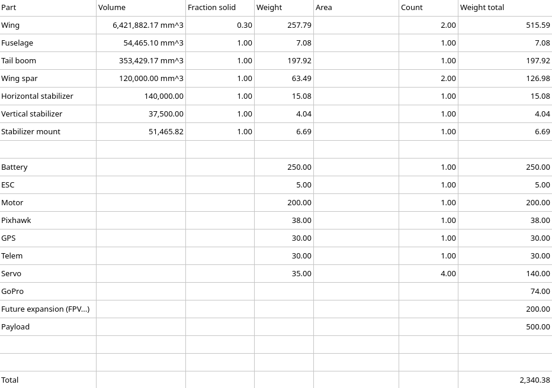

Iteration 4: Propulsion Weight¶
from unyt import km, m, mm, inch, g, kg, hr, minute, s, degree, radian, volt
import numpy as np
from matplotlib import pyplot as plt
from math import pi as π
%matplotlib inline
rpm = minute**-1
ρ = 1.225*kg/m**3 # air density
μinf = 1.81e-5*kg/(m*s) # viscosity of air
Goals:
Use more accurate weight estimate with new power system components
Initial Design¶
b = 3050*mm # wingspan
c = 230*mm # chord
S = b*c # wing area
AR = b**2/S
AR
unyt_quantity(13.26086957, '(dimensionless)')
Weight Estimate¶
Weight estimate increased from 2340 to 3047 (increased weight of battery, ESC, motor, and future expansion + added prop weight estimate).
W = 3047*g # weight

Airfoil Selection¶
Cruise speed lowered from 45 to 30.
V = 30*km/hr # cruise speed
CL = (2*W)/(ρ*V**2*S)
Re = (ρ*V*c)/μinf
round(Re.to_value(), -3)
130000.0

From bottom left up: Blue = 50,000 Orange = 100,000 Green = 200,000
α0 = -3.75*degree
Clα = 1.05
e = 0.8
CLα = Clα/(1+(Clα/(π*e*AR)))
CL_unitless = CL.to_value('s**2/m')
α = α0+((CL_unitless/CLα)*radian)
α
unyt_quantity(1.99785477, 'degree')

By increasing the weight our cruise angle of attack increased to 2° which is a lot closer to the optimal. That’s a nice consequence.
CLmax = 1.4*s**2/m
Vstall = np.sqrt((2*W)/(ρ*S*CLmax))
print(f"Cruise speed: {V.to('m/s'):.2f}, Stall speed: {Vstall:.2f}")
Cruise speed: 8.33 m/s, Stall speed: 2.25 m/s
Worse than the 1.97 m/s of iteration 3 but still OK.
Wing Loading and Thrust to Weight Ratio¶
WCL = W/(S**(3/2))
print(f"Wing loading: {WCL.to('kg/m**3'):.2f}")
Wing loading: 5.19 kg/m**3
Type of Aircraft |
WCL (kg/m^3) |
|---|---|
Gliders |
under 4 |
Trainers |
5-7 |
Sport Aerobatic |
8-10 |
Racers |
11-13 |
Scale |
over 15 |
This could probably be a bit lower. Although my eventual vision is more like a glider-with-enough-power-for-autonomous-takeoffs type design, so I guess it’s not surprising I won’t have the most incredible glide slope.
TtoW = 1.1
T = TtoW*W
print(f"Required thrust: {T.to('kg'):.2f}")
Required thrust: 3.35 kg
Propulsion system¶
Refer back to iteration 3 for kv and prop pitch Y estimates as we did not change the airspeed, so the required kv ratings and pitch Y estimates stay the same.
Increasing the weight did increase the required thrust from 2.6 to 3.35kg.
Propulsion system component selection¶
Looking back at the options I outlined in iteration 3, I couldn’t find anything which can sustain the 3.35kg required thrust. I decided to forgo that requirement. A 16x10 inch prop at full throttle may not be sustainable continuously for the PROPDRIVE v2 4258 500KV, but I think it’ll be fine because:
This would only occur at takeoff
The manufacturer published the 16x10 test results so at least it’s not completely fatal to run it like that
rcplanes.online’s excellent Electric Motor & Prop Combo Estimator indicates the 16x10/500Kv/6S combination should be able to generate 3.5kg of thrust @ 46.7A (below the Propdrive’s 60A max). I probably chose a bunch of paramters wrong, but still, it indicates the current draw will not be completely ludicrous.
In conclusion, I will be keeping the selction I made in iteration 3:
Motor: PROPDRIVE v2 4258 500KV Brushless Outrunner Motor - €46.10
Prop: TGS Precision Sport Propeller 17x10 - €6.14 * 3 = €18.42
ESC: YEP 80A (2~6S) SBEC - €43.49
Battery: Turnigy nano-tech 4000mAh 6S 35~70C - €63.39
Total power system: €171.40